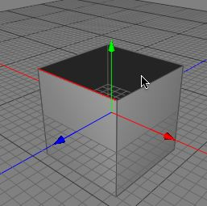

Cover Tool
The cover tool is almost the same as the extrude tool, except the cover tool is a headless tool which means it doesn't need extra interaction from the user. When you bind the cover tool to a hotkey (in the preferences window), you can extrude or inner extrude with the transform tool without changing the tool by simply performing the cover tool before you move or scale the polygon selection.
Modes
The cover tool can only be applied on raw polygon objects. It's only available in polygon and edge mode.

To use the cover tool, select some polygons of a raw polygon object. Then call the menu command "Tools PolygonCover". If you move the polygon selection, you will see that new polygons around the borders of the polygon selection were created.
PolygonCover". If you move the polygon selection, you will see that new polygons around the borders of the polygon selection were created.

The cover tool can be also used to extend a polygon object at its boarders. To do so select some boarder edges (edges which don't have an neighbor). Then apply the cover tool by calling the menu command "ToolsPolygonCover". If you move the edge selection with the transform tool, you will see that new polygons along the edge selection were created.

Keys
- none
Properties
- none